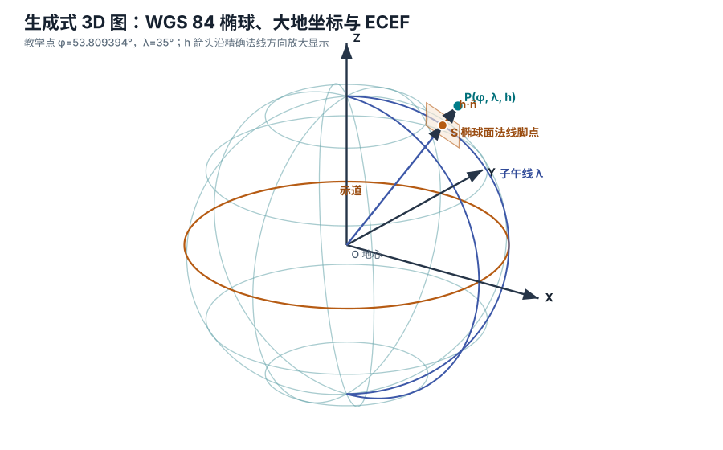
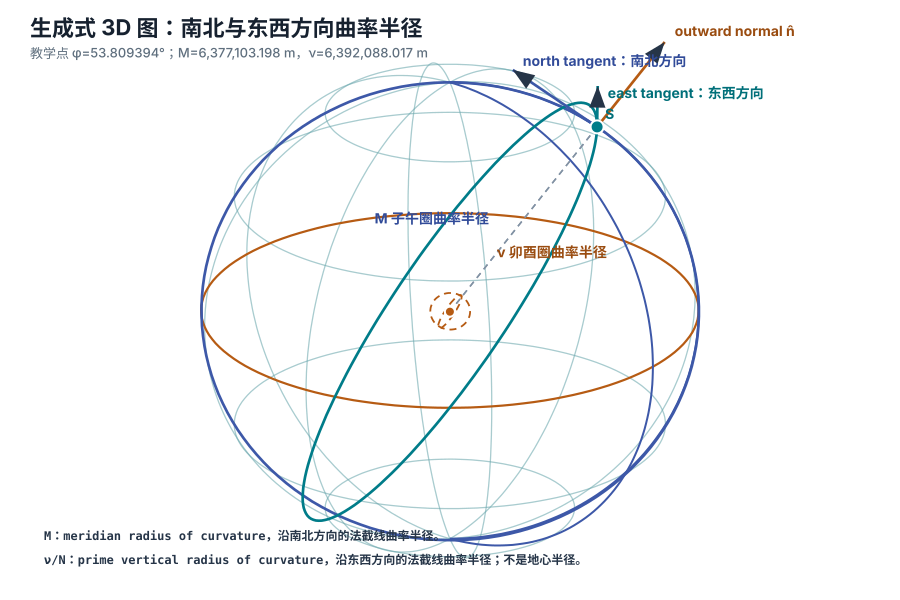
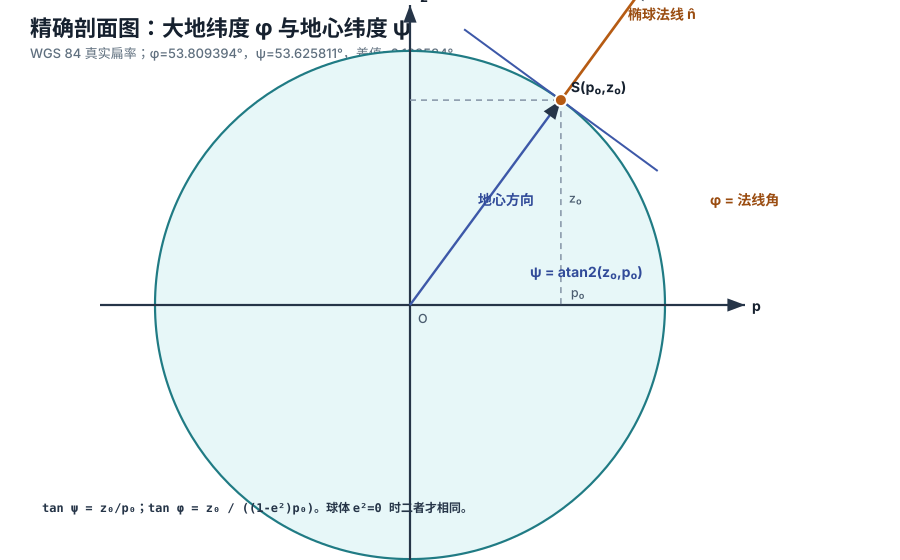
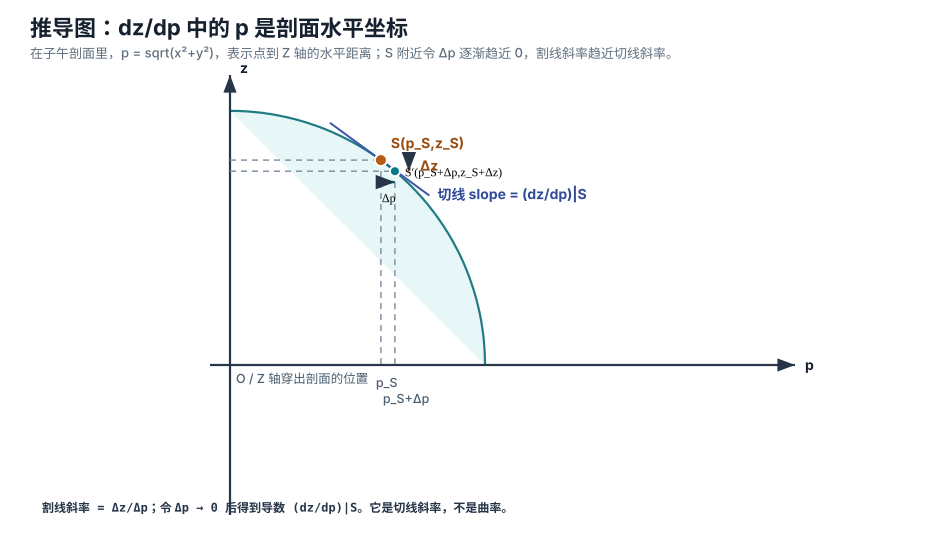
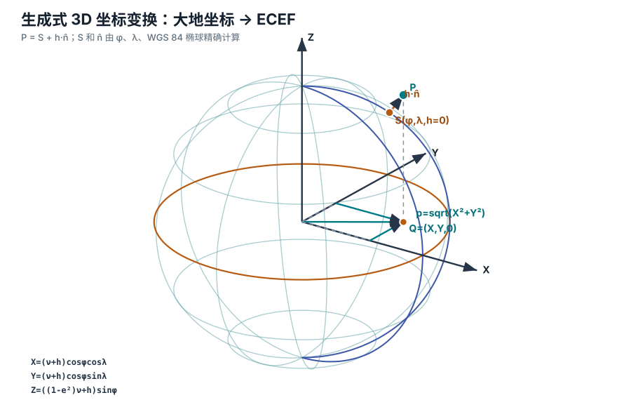
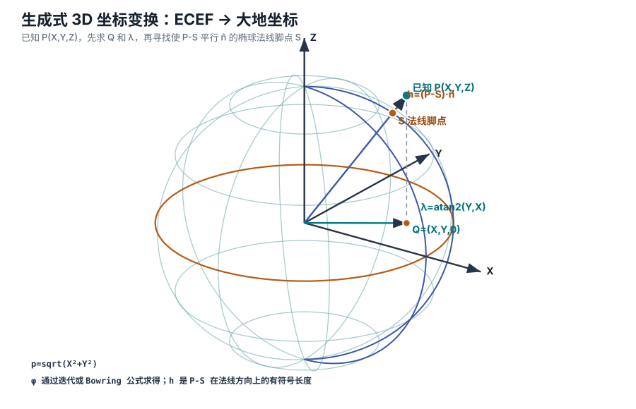
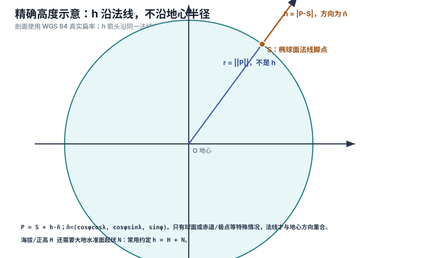
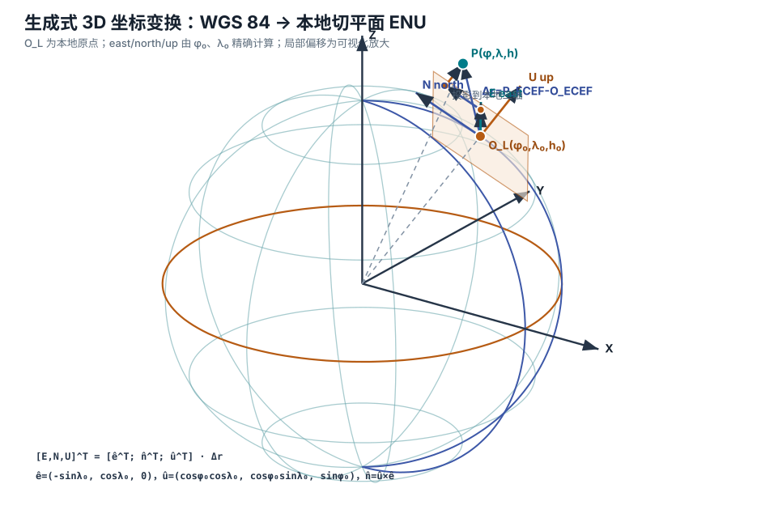

Teaching note from the Geodetic and ECEF chapterA bilingual teaching note based on the Geodetic and ECEF chapter
WGS 84 大地坐标、ECEF 与本地 tangent 空间：从概念、公式到 3D 示意图WGS 84 Geodetic Coordinates, ECEF, and Local Tangent Space: From Concepts and Formulas to 3D Diagrams
本页根据原始 Markdown 文档中 “Geodetic and ECEF coordinates” 一章扩展而成，并补充 WGS 84 到本地 tangent 空间的转换。目标不是只给公式，而是让读者知道每个缩写是什么意思、每个变量从哪里来、每个坐标变换在三维空间里做了什么。
This page expands the “Geodetic and ECEF coordinates” chapter from the original Markdown document and adds the conversion from WGS 84 to a local tangent space. The goal is not merely to list formulas, but to show what every abbreviation means, where each variable comes from, and what each coordinate transformation does in three-dimensional space.
适合读者：已经见过经纬度，但还不熟悉椭球、地心直角坐标、隐函数求导和反三角函数的人。页面中的 “3D” 指 three-dimensional，也就是三维空间示意。所有坐标图由 generate_geodetic_ecef_diagrams.py 按 WGS 84 参数和正交投影生成，不再手工凭感觉摆放矢量点线。
Intended readers: people who have seen latitude and longitude, but are not yet comfortable with ellipsoids, Earth-centered Cartesian coordinates, implicit differentiation, or inverse trigonometric functions. “3D” means three-dimensional. All coordinate diagrams are generated by generate_geodetic_ecef_diagrams.py from WGS 84 parameters and an orthographic projection, rather than being hand-positioned by eye.
先分清坐标First separate the coordinate types大地坐标用纬度、经度和椭球高；ECEF 用从地心出发的 X、Y、Z。Geodetic coordinates use latitude, longitude, and ellipsoidal height; ECEF uses X, Y, and Z measured from the Earth’s center.
再看椭球几何Then study ellipsoid geometryWGS 84 不是完美球体，而是赤道略鼓、两极略扁的旋转椭球。WGS 84 is not a perfect sphere, but an oblate ellipsoid: slightly bulged at the equator and flattened at the poles.
理解正算Understand the forward conversion给定大地纬度 φ、大地经度 λ、椭球高 h，先算椭球面点 S 和单位法线 n̂，再用目标点 P = S + h·n̂ 分解到 X、Y、Z 三轴。Given geodetic latitude φ, geodetic longitude λ, and ellipsoidal height h, first compute the surface point S and unit normal n̂, then decompose P = S + h·n̂ onto the X, Y, and Z axes.
理解反算Understand the inverse conversion给定目标点的 X、Y、Z，可恢复 φ、λ、h；给定本地原点，还可投影成 ENU。Given a target point’s X, Y, and Z, recover φ, λ, and h; with a local origin, the same point can also be projected into ENU.
1. 缩写和术语先展开Expand Abbreviations and Terms First
坐标转换文档很容易被缩写淹没。先把常见缩写铺开，后面读公式会轻很多。
Coordinate transformation documents can quickly drown the reader in abbreviations. Expanding the common terms first makes the formulas much easier to read later.
缩写或术语Abbreviation or term
完整展开Full form
在本章中的意思Meaning in this chapter
WGS 84
World Geodetic System 1984，1984 世界大地测量系统World Geodetic System 1984.
全球大地参考系统。它给出地球椭球、坐标框架和一组标准参数，全球导航卫星系统常用它表示位置。A global geodetic reference system. It defines the Earth ellipsoid, coordinate frame, and standard parameters commonly used by global navigation satellite systems to express positions.
ECEF
Earth-Centered, Earth-Fixed，地心地固Earth-centered and fixed to the rotating Earth.
原点在地球质心，坐标轴随地球一起旋转的三维直角坐标系。A three-dimensional Cartesian coordinate system whose origin is at the Earth’s center of mass and whose axes rotate with the Earth.
ENU
East, North, Up，东、北、天East, North, and Up.
常见的本地切平面坐标轴约定。E 表示向东，N 表示向北，U 表示沿椭球法线向上。A common local tangent plane axis convention. E points east, N points north, and U points upward along the ellipsoid normal.
NED
North, East, Down，北、东、地North, East, and Down.
航空、机器人和控制领域常见的另一种本地坐标轴约定。它和 ENU 只是轴顺序和竖直方向符号不同。Another local-axis convention common in aviation, robotics, and control systems. It differs from ENU only in axis order and the sign of the vertical axis.
LTP / LTS
Local Tangent Plane / Local Tangent Space，本地切平面 / 本地切空间A plane or space tangent to the ellipsoid at a chosen local origin.
以某个 WGS 84 原点为锚点，把附近点表示成局部直角坐标。tangent 是“相切”的意思，本页默认用 ENU 轴。A way to anchor nearby points to a WGS 84 origin and express them as local Cartesian coordinates. “Tangent” means touching the surface; this page uses ENU axes by default.
GNSS
Global Navigation Satellite System，全球导航卫星系统Global Navigation Satellite System.
卫星定位系统的总称，例如 GPS、Galileo、BeiDou、GLONASS。GLONASS 来自俄语 Globalnaya Navigatsionnaya Sputnikovaya Sistema，意思是全球导航卫星系统。A general name for satellite positioning systems such as GPS, Galileo, BeiDou, and GLONASS. GLONASS comes from the Russian “Globalnaya Navigatsionnaya Sputnikovaya Sistema,” meaning global navigation satellite system.
GPS
Global Positioning System，全球定位系统Global Positioning System.
美国建设的全球导航卫星系统，常把定位结果放在 WGS 84 参考框架中使用。The global navigation satellite system built by the United States; its positioning results are commonly used in the WGS 84 reference frame.
一套完整规则：坐标轴、单位、原点、基准和数学模型。只写 “经纬度” 通常还不够完整。A complete set of rules: axes, units, origin, datum, and mathematical model. Simply writing “latitude and longitude” is usually not complete enough.
EPSG
European Petroleum Survey Group，欧洲石油调查组织European Petroleum Survey Group.
历史名称。现在常指由 International Association of Oil & Gas Producers 维护的 EPSG Geodetic Parameter Dataset，即大地测量参数数据库。A historical name. Today it usually refers to the EPSG Geodetic Parameter Dataset maintained by the International Association of Oil & Gas Producers.
IOGP
International Association of Oil & Gas Producers，国际油气生产者协会International Association of Oil & Gas Producers.
维护 EPSG 数据集并发布坐标转换指导文档的组织。The organization that maintains the EPSG dataset and publishes coordinate transformation guidance.
NOAA
National Oceanic and Atmospheric Administration，美国国家海洋和大气管理局National Oceanic and Atmospheric Administration.
发布测地、海洋、大气相关定义和说明的机构。An agency that publishes definitions and explanations related to geodesy, oceans, and the atmosphere.
NGA
National Geospatial-Intelligence Agency，美国国家地理空间情报局National Geospatial-Intelligence Agency.
维护 WGS 84 相关规范的重要机构。An important agency responsible for WGS 84 related specifications.
DMS
Degrees, Minutes, Seconds，度、分、秒Degrees, minutes, and seconds.
角度写法。例如 53°48′33.820″N 表示北纬 53 度、48 分、33.820 秒；E 表示东经，N 表示北纬。An angular notation. For example, 53°48′33.820″N means 53 degrees, 48 minutes, and 33.820 seconds north; E means east longitude, and N means north latitude.
一种把地球表面分带投影到平面的坐标系统。本页只偶尔提到它，不展开 UTM 公式。A coordinate system that projects the Earth’s surface into zones on a plane. This page only mentions it occasionally and does not derive UTM formulas.
2. 两个坐标系到底差在哪里What Exactly Is Different Between the Two Coordinate Systems?
大地坐标和 ECEF 坐标可以表示同一个物理点，但它们的“语言”完全不同。前者更适合人看地图，后者更适合计算三维向量。
Geodetic coordinates and ECEF coordinates can describe the same physical point, but they speak completely different “languages.” The former is easier for humans reading maps, while the latter is better for computing three-dimensional vectors.
大地坐标：φ、λ、hGeodetic Coordinates: φ, λ, h
大地坐标写成 (φ, λ, h)。φ 是 geodetic latitude，即大地纬度；λ 是 geodetic longitude，即大地经度；h 是 ellipsoidal height，即椭球高。这里的 h 必须和椭球表面、切平面、法线一起理解，不能按“从地心往外量”来理解。
Geodetic coordinates are written as (φ, λ, h). φ is geodetic latitude, λ is geodetic longitude, and h is ellipsoidal height. Here h must be understood together with the ellipsoid surface, tangent plane, and normal line; it must not be interpreted as a distance measured outward from the Earth’s center.
φ：phi，大地纬度。它由椭球法线决定，不是从地心连线决定。φ: phi, geodetic latitude. It is defined by the ellipsoid normal, not by the line from the Earth’s center.
λ：lambda，大地经度。通常以格林尼治子午面为零经度。λ: lambda, geodetic longitude. It is usually measured from the Greenwich meridian plane.
h：椭球高。先在椭球面上找到法线脚点 S，再沿 S 处单位法线 n̂ 到目标点 P 的有符号距离。h: ellipsoidal height. First find the foot point S on the ellipsoid surface, then measure the signed distance from S to the target point P along the unit normal n̂ at S.
datum/frame：基准或参考框架。这里默认都在 WGS 84 内部，不做基准变换。datum/frame: the datum or reference frame. This page assumes everything stays inside WGS 84 and does not perform datum transformations.
ECEF 坐标：X、Y、ZECEF Coordinates: X, Y, Z
ECEF 坐标写成 (X, Y, Z)，单位通常是米。它是右手直角坐标系：X 轴穿过赤道和格林尼治子午线交点，Y 轴穿过赤道和 90°E 经线交点，Z 轴沿地球自转轴指向北极。这里 E 是 East，表示东经方向。
ECEF coordinates are written as (X, Y, Z), usually in meters. This is a right-handed Cartesian coordinate system: the X axis passes through the intersection of the equator and the Greenwich meridian, the Y axis passes through the intersection of the equator and the 90°E meridian, and the Z axis follows the Earth’s rotation axis toward the North Pole. Here E means East.
X：沿格林尼治赤道方向的地心直角坐标。X: the Earth-centered Cartesian coordinate in the Greenwich-equator direction.
Y：沿 90°E 赤道方向的地心直角坐标，E 是 East，表示东。Y: the Earth-centered Cartesian coordinate in the 90°E equator direction; E means East.
Z：沿地球自转轴向北的地心直角坐标。Z: the Earth-centered Cartesian coordinate along the Earth’s rotation axis toward the north.
O：Earth center，地球中心或更准确说地球质心。O: Earth center, or more precisely the Earth’s center of mass.

这张图由脚本按 WGS 84 椭球参数、教学点 φ=53.809394°、λ=35° 和固定正交投影生成。P 可以用大地坐标 (φ, λ, h) 表示，也可以用 ECEF 坐标 (X, Y, Z) 表示。图中的 h 箭头沿精确单位法线 n̂ 放大显示，只用于看清方向；真实近地高度相对地球半径太小，按比例绘制会几乎不可见。
This diagram is generated from the WGS 84 ellipsoid parameters, the teaching point φ=53.809394° and λ=35°, and a fixed orthographic projection. P can be represented by geodetic coordinates (φ, λ, h) or by ECEF coordinates (X, Y, Z). The h arrow is enlarged along the exact unit normal n̂ only to make the direction visible; real near-ground heights are so small relative to the Earth’s radius that a true-scale drawing would make them almost invisible.
3. 读公式前需要的数学最小包The Minimal Math Toolkit Before Reading the Formulas
这一章真正用到的高等数学不多，但每一项都很关键。下面是够用版解释，并给出继续学习入口。
This chapter does not use much advanced mathematics, but every item it does use matters. The explanations below are the “enough to proceed” version, with learning entry points for further study.
三角函数和弧度Trigonometric Functions and Radians
sin、cos、tan 分别描述直角三角形中的边长比例。π 读作 pi，是圆周率。计算机函数通常要求角度用 radians，即弧度，而不是 degrees，即度。
sin, cos, and tan describe side-length ratios in a right triangle. π is read as pi and is the circle constant. Computer functions usually require angles in radians rather than degrees.
学习入口：三角函数、单位圆、弧度制。Learning entry points: trigonometric functions, the unit circle, and radian measure.
勾股定理和投影The Pythagorean Theorem and Projection
本卡片里的 X、Y 是目标点 P 的 ECEF 水平分量，也就是赤道平面内的两个直角坐标；p 是 P 到 Z 轴的水平距离。这个 p 来自勾股定理。sqrt 是 square root，意思是平方根。
In this card, X and Y are the horizontal ECEF components of target point P, namely the two Cartesian coordinates in the equatorial plane; p is the horizontal distance from P to the Z axis. This p comes from the Pythagorean theorem. sqrt means square root.
这里 λ 是大地经度，X、Y 仍是目标点 P 在 ECEF 中的水平分量。atan 是 arctangent，即反正切，只知道比例 Y/X。atan2(Y, X) 同时看 X 和 Y 的符号，能判断角落在哪个象限。
Here λ is geodetic longitude, and X and Y are still the horizontal ECEF components of target point P. atan means arctangent and only knows the ratio Y/X. atan2(Y, X) also checks the signs of X and Y, so it can determine the correct quadrant.
\[
\lambda=\operatorname{atan2}(Y,X)
\]
学习入口：反三角函数、象限、极坐标。Learning entry points: inverse trigonometric functions, quadrants, and polar coordinates.
隐函数求导Implicit Differentiation
这里 p 是二维剖面里“到 Z 轴的水平距离”，z 是竖直坐标，a 是赤道半径，b 是极半径。椭圆方程不是 z = 某个 p 的简单形式，而是 p 和 z 同时出现在一个等式里。对等式两边求导，可以得到切线斜率。
Here p is the horizontal distance to the Z axis in the two-dimensional section, z is the vertical coordinate, a is the equatorial radius, and b is the polar radius. The ellipse equation is not a simple expression of the form z = some function of p; p and z appear together in one equation. Differentiating both sides gives the tangent slope.
学习入口：导数、隐函数求导、切线斜率。Learning entry points: derivatives, implicit differentiation, and tangent slope.
法线和负倒数Normals and Negative Reciprocals
曲线某点的切线表示“贴着表面走”的方向，法线表示“垂直表面出去”的方向。在平面中，两条互相垂直的直线斜率相乘为 -1。
The tangent at a point on a curve gives the direction of moving along the surface, while the normal gives the direction going out perpendicular to the surface. In a plane, the slopes of two perpendicular non-vertical lines multiply to -1.
学习入口：解析几何、斜率、垂直关系。Learning entry points: analytic geometry, slope, and perpendicular relationships.
非线性方程和迭代Nonlinear Equations and Iteration
ECEF 反算大地纬度时，φ 是待求的大地纬度。它会同时出现在 tan、sin 和平方根里，不能像一次方程那样一移项就解出。迭代就是先猜一个 φ，再反复修正。
When converting ECEF back to geodetic latitude, φ is the unknown latitude. It appears inside tan, sin, and a square root, so it cannot be isolated like a linear equation. Iteration means guessing a φ first and then repeatedly correcting it.
学习入口：非线性方程、固定点迭代、收敛。Learning entry points: nonlinear equations, fixed-point iteration, and convergence.
4. 椭球几何：为什么会出现 νEllipsoid Geometry: Why ν Appears
WGS 84 把地球近似为旋转椭球。赤道半径较长，极半径较短。把三维椭球沿某个经线剖开，就得到一个二维椭圆；许多公式都从这个剖面来。
WGS 84 approximates the Earth as an ellipsoid of revolution. The equatorial radius is longer, and the polar radius is shorter. If the three-dimensional ellipsoid is sliced along a meridian, the result is a two-dimensional ellipse; many formulas come from this section.
WGS 84 椭球参数WGS 84 Ellipsoid Parameters
符号Symbol
含义Meaning
WGS 84 常用值Common WGS 84 value
a
semi-major axis，半长轴，也就是赤道半径Semi-major axis, also the equatorial radius.
6,378,137.0 m
b
semi-minor axis，半短轴，也就是极半径Semi-minor axis, also the polar radius.
约 6,356,752.314245 mApproximately 6,356,752.314245 m.
f
flattening，扁率，描述两极被压扁的程度Flattening, describing how much the poles are compressed.
1 / 298.257223563
e²
first eccentricity squared，第一偏心率平方First eccentricity squared.
约 0.00669437999014Approximately 0.00669437999014.
ν
prime vertical radius of curvature，卯酉圈曲率半径，也常写作 NPrime vertical radius of curvature, also often written as N.
随纬度 φ 改变Varies with latitude φ.
M
meridian radius of curvature，子午圈曲率半径Meridian radius of curvature.
随纬度 φ 改变Varies with latitude φ.
b、f、e² 的关系：b = a(1 - f)，e² = f(2 - f)。这些量描述的是同一个椭球形状，只是角度不同。
Relationship among b, f, and e²: b = a(1 - f), and e² = f(2 - f). These quantities describe the same ellipsoid shape from different angles.
椭球方程到剖面方程From the Ellipsoid Equation to the Section Equation
下面这组公式里，x、y、z 是以地心 O 为原点的三维直角坐标；a 是赤道半径，b 是极半径。WGS 84 旋转椭球的三维方程是：
In the formulas below, x, y, and z are three-dimensional Cartesian coordinates with Earth center O as the origin; a is the equatorial radius, and b is the polar radius. The three-dimensional equation of the WGS 84 ellipsoid of revolution is:
先令 p 表示“任意点到 Z 轴的水平距离”，即 p = sqrt(x² + y²)。这里的 p 是通用剖面坐标；如果讨论椭球面点 S，后面会写成 p_S；如果讨论反算中已知目标点 P，则写成 p。因为椭球绕 Z 轴旋转对称，三维问题可以先在 (p, z) 剖面中处理：
First let p mean the horizontal distance from any point to the Z axis, namely p = sqrt(x² + y²). This p is a general section coordinate. When discussing the ellipsoid surface point S, it will be written as p_S; when discussing the known target point P in inverse conversion, it is written as p. Because the ellipsoid is rotationally symmetric around the Z axis, the three-dimensional problem can first be handled in the (p, z) section:
子午圈与卯酉圈：古怪翻译背后的方向Meridian and Prime Vertical: The Directions Behind the Strange Translation
在测地学里，点 S 附近有两个最重要的局部弯曲方向：沿经线走的南北方向，以及沿纬线附近走的东西方向。传统中文用十二地支表示方位：子是北，午是南，卯是东，酉是西。所以 子午圈就是南北向的 meridian；卯酉圈就是东西向的 prime vertical。
In geodesy, the neighborhood of point S has two especially important local bending directions: the north-south direction along a meridian, and the east-west direction near a parallel. Traditional Chinese uses the twelve earthly branches for directions: zi means north, wu means south, mao means east, and you means west. Therefore 子午圈 is the north-south meridian, and 卯酉圈 is the east-west prime vertical.
英文 prime vertical 直译可叫“主垂直圈”或“第一垂直圈”。在天文地平坐标语境中，它是天球上经过天顶、天底、正东和正西的大圆，圆心在观测者那里；但在本页的 prime vertical radius of curvature 里，我们说的不是那个天球大圆，而是椭球表面点 S 处东西方向法截线的局部曲率半径。这个曲率圆的圆心一般不在地心。
The English term prime vertical could be translated literally as “main vertical circle” or “first vertical circle.” In astronomical horizon coordinates, it is the great circle on the celestial sphere passing through the zenith, nadir, due east, and due west, centered at the observer. But in prime vertical radius of curvature on this page, we do not mean that celestial great circle. We mean the local radius of curvature of the east-west normal section at ellipsoid surface point S. The center of that curvature circle is generally not the Earth’s center.
南北方向：子午圈曲率半径 MNorth-South Direction: Meridian Radius of Curvature M
沿经线方向，也就是向北或向南走，椭球剖面就是子午椭圆。这里 S 是椭球表面点，φ 是 S 处的大地纬度，a 是赤道半径，e² 是第一偏心率平方。M 表示这个南北方向法截线在 S 附近的密切圆半径，英文是 meridian radius of curvature，中文是子午圈曲率半径。
Along the meridian direction, meaning moving north or south, the ellipsoid section is the meridian ellipse. Here S is an ellipsoid surface point, φ is the geodetic latitude at S, a is the equatorial radius, and e² is the first eccentricity squared. M is the radius of the osculating circle of this north-south normal section near S. In English it is the meridian radius of curvature.
东西方向：卯酉圈曲率半径 ν 或 NEast-West Direction: Prime Vertical Radius of Curvature ν or N
沿东西方向看局部弯曲，使用的是由 S 处法线和东西切向量共同确定的法截线。这里 ν 读作 nu，也常写成 N；φ、a、e² 的含义与左侧公式相同。ν/N 表示这个东西方向法截线在 S 附近的密切圆半径，英文是 prime vertical radius of curvature，中文是卯酉圈曲率半径。
To examine local bending in the east-west direction, use the normal section determined by the normal at S and the east-west tangent vector. Here ν is read as nu and is also often written as N; φ, a, and e² have the same meanings as in the formula on the left. ν/N is the radius of the osculating circle of this east-west normal section near S, called the prime vertical radius of curvature in English.
\[
\nu=N=\frac{a}{\sqrt{1-e^2\sin^2\phi}}
\]
不要把 M 或 ν 理解成地心半径。
曲率半径描述的是点 S 附近某个方向“弯得有多厉害”。它来自局部密切圆，不是从地心 O 到 S 或 P 的长度。正算公式里出现 ν，是因为大地纬度按椭球法线定义，S 的水平分量正好写成 ν cosφ。
Do not interpret M or ν as a geocentric radius. A radius of curvature describes how strongly the surface bends near S in a certain direction. It comes from a local osculating circle, not from the length from Earth center O to S or P. ν appears in the forward formula because geodetic latitude is defined by the ellipsoid normal, and the horizontal component of S is exactly ν cosφ.

这张图由脚本在同一教学点生成。南北切向对应子午圈曲率半径 M，东西切向对应卯酉圈曲率半径 ν/N；两者都是局部法截线的曲率半径。图中的虚线小圆用于提示密切圆概念，完整半径按公式计算并在图题中标出。
This diagram is generated at the same teaching point. The north-south tangent corresponds to the meridian radius of curvature M, and the east-west tangent corresponds to the prime vertical radius of curvature ν/N; both are curvature radii of local normal sections. The dashed small circles hint at the osculating-circle concept; the full radii are computed from the formulas and shown in the diagram title.

这张剖面图使用 WGS 84 真实扁率计算。φ 是椭球法线与赤道平面的夹角，ψ 是地心连线与赤道平面的夹角。图中的 S(p_S,z_S) 表示椭球面点 S 在子午剖面中的坐标：p_S 是 S 到 Z 轴的水平距离，z_S 是 S 的竖直坐标。这里的 p_S、z_S 与下一段推导中的 p_S、z_S 是同一对量；它们都属于表面点 S，不是反算目标点 P 的 p。在教学纬度 φ=53.809394° 处，ψ=53.625811°，二者相差约 0.183584°。差异很小但会进入精密坐标转换公式。
This section diagram uses the true WGS 84 flattening. φ is the angle between the ellipsoid normal and the equatorial plane, while ψ is the angle between the geocentric line and the equatorial plane. S(p_S,z_S) denotes the coordinates of ellipsoid surface point S in the meridian section: p_S is the horizontal distance from S to the Z axis, and z_S is its vertical coordinate. These p_S and z_S are the same pair used in the next derivation; they belong to surface point S, not to the inverse-conversion target point P. At the teaching latitude φ=53.809394°, ψ=53.625811°, a difference of about 0.183584°. The difference is small but enters precise coordinate transformation formulas.
从切线斜率推到表面点公式From Tangent Slope to the Surface-Point Formula
下面只讨论椭球表面点 S。把 S 在子午剖面中的坐标写成 S(p_S, z_S)，其中 p_S 是 S 到 Z 轴的水平距离，z_S 是 S 的竖直坐标。椭圆方程 p²/a² + z²/b² = 1 中的 p、z 先是通用剖面坐标；求导后再把它们代入为 p_S、z_S：
The following discussion only concerns ellipsoid surface point S. Write the coordinates of S in the meridian section as S(p_S, z_S), where p_S is the horizontal distance from S to the Z axis and z_S is its vertical coordinate. In the ellipse equation p²/a² + z²/b² = 1, p and z first act as general section coordinates; after differentiation, they are evaluated as p_S and z_S:

这张图只画子午剖面右上象限。横轴 p 不是某个新坐标系的 X 轴，而是任意三维点到 Z 轴的水平距离 p=sqrt(x²+y²)。对固定点 S 来说，p 的取值是 p_S；对附近点 S′ 来说，p 的取值是 p_S+Δp。割线斜率 Δz/Δp 在 Δp 趋近 0 时，极限就是 S 处的导数 dz/dp，也就是切线斜率。
This diagram shows only the upper-right quadrant of the meridian section. The horizontal axis p is not the X axis of a new coordinate system; it is the horizontal distance p=sqrt(x²+y²) from any three-dimensional point to the Z axis. For the fixed point S, the value of p is p_S; for a nearby point S′, it is p_S+Δp. As Δp approaches 0, the secant slope Δz/Δp approaches the derivative dz/dp at S, which is the tangent slope.
先纠正一个容易混淆的说法：
dz/dp 是 slope，即切线斜率，不是曲率（curvature）。斜率描述“曲线上这一点朝哪个方向倾斜”；曲率描述“斜率沿曲线变化得有多快”，需要二阶导数或曲率半径来表达。前面讲 M 和 ν 时说的是曲率半径；这里用 dz/dp 只是为了找到切线，再由切线垂直关系得到法线方向。
First correct an easy confusion: dz/dp is a slope, namely the tangent slope, not curvature. Slope describes the direction in which the curve leans at a point; curvature describes how quickly that slope changes along the curve, and requires a second derivative or a radius of curvature. The earlier M and ν discussion was about radii of curvature; here dz/dp is used only to find the tangent, and then the perpendicular relationship gives the normal direction.
更严格地说，在 S 附近可以把椭圆上半支看成一个函数 z=z(p)。这里 z(p) 的意思是：给定一个水平距离 p，椭圆方程会给出对应的竖直坐标 z。选一个很靠近 S 的点 S′，它的水平变化量是 Δp，竖直变化量是 Δz，则割线斜率是：
More rigorously, near S the upper branch of the ellipse can be viewed as a function z=z(p). Here z(p) means: given a horizontal distance p, the ellipse equation gives the corresponding vertical coordinate z. Choose a point S′ very close to S. Its horizontal change is Δp, and its vertical change is Δz, so the secant slope is:
所以 dz/dp 的分母 p，就是图中的水平剖面坐标 p，而不是目标点 P，也不是一个固定常数。只有写成 p_S 时，才表示“把这个水平坐标取在表面点 S 上”。
Therefore the p in the denominator of dz/dp is the horizontal section coordinate p shown in the diagram. It is not the target point P and not a fixed constant. Only when it is written as p_S does it mean “take this horizontal coordinate at surface point S.”
上面的 ∂F/∂p 和 ∂F/∂z 是 partial derivative，即偏导数。∂F/∂z 的意思不是“把 dF 除以 dz”，而是“先暂时固定 p，只改变 z，F 会按多快的速度变化”。但沿椭圆曲线移动时，z 又会随着 p 改变，所以链式法则会额外乘上 dz/dp。因为椭圆上的每个点都满足 F(p,z)=0，沿曲线移动时 F 的值一直是 0，所以总导数 dF/dp 也等于 0。
The ∂F/∂p and ∂F/∂z above are partial derivatives. ∂F/∂z does not mean “divide dF by dz”; it means “temporarily hold p fixed, change only z, and ask how fast F changes.” But when moving along the ellipse, z also changes with p, so the chain rule contributes the extra factor dz/dp. Because every point on the ellipse satisfies F(p,z)=0, the value of F remains 0 while moving along the curve, so the total derivative dF/dp is also 0.
记号 \(\left.dz/dp\right|_S\) 读作“dz/dp evaluated at S”，也就是“把 dz/dp 这个通用表达式拿到点 S 上求值”。竖线 | 后面的 S 是求值位置，不是乘以 S：
The notation \(\left.dz/dp\right|_S\) is read as “dz/dp evaluated at S.” It means taking the general expression dz/dp and evaluating it at point S. The S after the vertical bar is the evaluation location; it is not multiplication by S:
得到 S 处切线斜率后，再用“法线与切线垂直”。在二维直角坐标里，如果两条非竖直直线互相垂直，它们的斜率乘积为 -1，因此法线斜率是切线斜率的负倒数：
After obtaining the tangent slope at S, use the fact that the normal is perpendicular to the tangent. In two-dimensional Cartesian coordinates, if two non-vertical lines are perpendicular, their slopes multiply to -1. Therefore the normal slope is the negative reciprocal of the tangent slope:
大地纬度 φ 就是 S 处椭球法线相对赤道平面的角度。tan φ 是“法线竖直变化 / 法线水平变化”，因此等于法线斜率：
Geodetic latitude φ is the angle between the ellipsoid normal at S and the equatorial plane. tan φ is the vertical change divided by the horizontal change along the normal, so it equals the normal slope:
把这个关系和椭圆方程联立，就得到标准表面点坐标。第一步先把 z_S 写成 p_S 和 φ 的形式；第二步代回椭圆方程；第三步用 b²=a²(1-e²) 化简。这里 ν 是 S 处的卯酉圈曲率半径，a 是赤道半径，e² 是第一偏心率平方：
Combining this relationship with the ellipse equation gives the standard surface-point coordinates. First write z_S in terms of p_S and φ; second substitute it back into the ellipse equation; third simplify using b²=a²(1-e²). Here ν is the prime vertical radius of curvature at S, a is the equatorial radius, and e² is the first eccentricity squared:
核心直觉：ν 不是凭空冒出来的常数，它来自“沿椭球法线定义纬度”这件事。只要用大地纬度而不是地心纬度，ν 就会自然出现在公式中。
Core intuition: ν is not an arbitrary constant. It appears because latitude is defined along the ellipsoid normal. As long as geodetic latitude, rather than geocentric latitude, is used, ν naturally enters the formula.
5. 坐标变换一：大地坐标 (φ, λ, h) 到 ECEF (X, Y, Z)Coordinate Transformation 1: Geodetic Coordinates (φ, λ, h) to ECEF (X, Y, Z)
正算最容易建立空间直觉：φ 和 λ 先确定椭球表面点 S 以及该点的单位法线 n̂；再沿 n̂ 走有符号距离 h 到点 P；最后把 P 的三维位置分解到 X、Y、Z 轴。
The forward conversion is the easiest way to build spatial intuition: φ and λ first determine the ellipsoid surface point S and its unit normal n̂; then move a signed distance h along n̂ to reach P; finally decompose the three-dimensional position of P onto the X, Y, and Z axes.

正算图由脚本从公式 S(φ,λ)、n̂(φ,λ)、P=S+h·n̂、Q=(X,Y,0) 生成。φ 和 λ 先确定椭球面点 S 及其单位法线 n̂，h 是沿 n̂ 的有符号距离，最后把 P 的三维位置分解成 X、Y、Z。
The forward-conversion diagram is generated from the formulas S(φ,λ), n̂(φ,λ), P=S+h·n̂, and Q=(X,Y,0). φ and λ first determine the ellipsoid surface point S and its unit normal n̂; h is the signed distance along n̂; finally the three-dimensional position of P is decomposed into X, Y, and Z.
正算公式Forward Formula
本卡片处理正算：已知大地纬度 φ、大地经度 λ、椭球高 h，以及 WGS 84 椭球参数 a 和 e²。先算卯酉圈曲率半径 ν，再写出椭球面点 S 和单位法线 n̂；P 是最终目标点。
This card handles the forward conversion: geodetic latitude φ, geodetic longitude λ, ellipsoidal height h, and WGS 84 ellipsoid parameters a and e² are known. First compute the prime vertical radius of curvature ν, then write the ellipsoid surface point S and the unit normal n̂; P is the final target point.
把 P 的三个分量展开，就得到 ECEF 坐标 X、Y、Z；它们分别是 P 在三条地心直角轴上的坐标值：Expanding the three components of P gives the ECEF coordinates X, Y, and Z. They are the coordinate values of P along the three Earth-centered Cartesian axes:
S 是 h=0 时的椭球面点。它不是地心，也不是平面地图上的点。S is the ellipsoid surface point when h=0. It is not the Earth center and not a point on a flat map.
ν 是 S 处东西方向法截线的曲率半径，也常写 N；它随 φ 改变。ν is the radius of curvature of the east-west normal section at S, also often written as N; it changes with φ.
n̂ 是 S 处垂直于椭球切平面的单位方向。单位方向的长度为 1，所以 h n̂ 的长度就是 h。n̂ is the unit direction perpendicular to the tangent plane of the ellipsoid at S. Because its length is 1, the length of h n̂ is exactly h.
h 为正时 P 在椭球外侧，为负时 P 在椭球内侧；h=0 时 P 就在参考椭球面上。When h is positive, P lies outside the ellipsoid; when h is negative, P lies inside it; when h=0, P is on the reference ellipsoid surface.
cos φ 把法线方向的单位向量压到赤道平面，得到水平投影比例。cos φ projects the normal-direction unit vector onto the equatorial plane, giving the horizontal projection ratio.
cos λ、sin λ 把赤道平面的投影分解到 X 轴和 Y 轴。cos λ and sin λ decompose the equatorial-plane projection onto the X and Y axes.
((1 - e²)ν + h) sin φ 是竖直方向的 Z 分量，里面的 (1 - e²) 来自椭球被压扁。((1 - e²)ν + h) sin φ is the vertical Z component; the (1 - e²) factor comes from the ellipsoid’s flattening.
把角度转成弧度。
如果输入是度、分、秒，先转成十进制度，再乘以 π/180。绝大多数编程语言的 sin、cos、tan 都吃弧度。
Convert angles to radians. If the input is in degrees, minutes, and seconds, first convert it to decimal degrees and then multiply by π/180. In most programming languages, sin, cos, and tan expect radians.
确认高度 h 是椭球高。
h 必须是沿椭球法线的有符号距离。如果 h 来自地形图或机场标高，它很可能是相对平均海平面的高度，不能直接塞进这个公式。
Confirm that height h is ellipsoidal height. h must be the signed distance along the ellipsoid normal. If h comes from a terrain map or airport elevation, it is probably height relative to mean sea level and cannot be inserted directly into this formula.
使用同一个椭球参数。
φ、λ、h、a、e² 必须属于同一个参考系统。这里默认使用 WGS 84。
Use the same ellipsoid parameters. φ, λ, h, a, and e² must belong to the same reference system. This page assumes WGS 84.
数值例子Numerical Example
原文章节使用了 EPSG/IOGP 示例点。这里 φ 是大地纬度，λ 是大地经度，h 是椭球高。DMS 写法先转成十进制度：
The original chapter uses an EPSG/IOGP example point. Here φ is geodetic latitude, λ is geodetic longitude, and h is ellipsoidal height. The DMS notation is first converted to decimal degrees:
6. 坐标变换二：ECEF (X, Y, Z) 到大地坐标 (φ, λ, h)Coordinate Transformation 2: ECEF (X, Y, Z) to Geodetic Coordinates (φ, λ, h)
反算比正算难，因为经度 λ 可以直接从 X、Y 得到，但纬度 φ 藏在 ν 里，而 ν 又依赖 sin²φ。这就是非线性。
The inverse conversion is harder than the forward conversion because longitude λ can be obtained directly from X and Y, but latitude φ is hidden inside ν, and ν itself depends on sin²φ. That is the nonlinearity.

反算图同样由脚本生成。已知 P(X,Y,Z) 后，先投影到赤道平面得到 Q，从 Q 求 p 和 λ；这里 p 是目标点 P 到 Z 轴的水平距离，不是表面点 S 的 p_S。难点是找到椭球面上的 S，使向量 P-S 与该点法线 n̂ 平行。找到 S 后，φ 来自这条法线方向，h 来自 P-S 在 n̂ 上的有符号长度。
The inverse-conversion diagram is also generated by script. Given P(X,Y,Z), first project it to the equatorial plane to obtain Q, then compute p and λ from Q. Here p is the horizontal distance from target point P to the Z axis, not the p_S of surface point S. The hard part is finding S on the ellipsoid surface such that the vector P-S is parallel to the normal n̂ at that point. Once S is found, φ comes from the normal direction, and h comes from the signed length of P-S along n̂.
先求简单部分Compute the Simple Part First
本卡片中 P(X,Y,Z) 是已知目标点，X、Y、Z 是它的 ECEF 坐标。λ 是目标点所在子午面的经度；p 是 P 到 Z 轴的水平距离。注意这个 p 属于目标点 P，不是上一节椭球面点 S 的 p_S。
In this card, P(X,Y,Z) is the known target point, and X, Y, and Z are its ECEF coordinates. λ is the longitude of the meridian plane containing the target point; p is the horizontal distance from P to the Z axis. Note that this p belongs to target point P, not to the p_S of ellipsoid surface point S in the previous section.
atan2 的好处是能区分东北、西北、西南、东南四个象限。如果只用 atan(Y/X)，X 为负或接近 0 时容易出错。
The advantage of atan2 is that it distinguishes the northeast, northwest, southwest, and southeast quadrants. If only atan(Y/X) is used, errors are likely when X is negative or close to zero.
为什么 φ 难求Why φ Is Hard to Solve
下面的 p 仍表示目标点 P 到 Z 轴的水平距离，Z 是 P 的竖直坐标，φ 是待求的大地纬度，h 是待求的椭球高，ν 是依赖 φ 的卯酉圈曲率半径。正算公式暗含：
The p below still means the horizontal distance from target point P to the Z axis. Z is the vertical coordinate of P, φ is the unknown geodetic latitude, h is the unknown ellipsoidal height, and ν is the prime vertical radius of curvature that depends on φ. The forward formula implies:
φ 同时出现在 tan、sin 和 ν 的平方根里，所以这是非线性方程。
φ appears simultaneously inside tan, sin, and the square root in ν, so this is a nonlinear equation.
方法 A：迭代反算，概念最直观Method A: Iterative Inverse Conversion, the Most Intuitive Conceptually
这里 φ₀ 是第 0 次猜测的大地纬度，p 和 Z 来自已知点 P(X,Y,Z)，e² 是椭球的第一偏心率平方。先给一个初始纬度 φ₀，然后每轮用当前纬度计算 ν，再更新纬度。常用初值是：
Here φ₀ is the zeroth guess for geodetic latitude, p and Z come from the known point P(X,Y,Z), and e² is the ellipsoid’s first eccentricity squared. Start with an initial latitude φ₀; in each round, compute ν from the current latitude and then update the latitude. A common initial value is:
迭代式中，φₙ 是第 n 次纬度估计，νₙ 是用 φₙ 算出来的卯酉圈曲率半径：In the iteration, φₙ is the nth latitude estimate, and νₙ is the prime vertical radius of curvature computed from φₙ:
当相邻两次 φ 的差很小，就停止。然后恢复高度：Stop when the difference between two successive φ values is very small. Then recover the height:
\[
h=\frac{p}{\cos\phi}-\nu
\]
直觉：每轮都在问“如果当前纬度是真的，法线半径 ν 应该是多少”，然后用这个 ν 反过来修正纬度。普通地表或近地空间点通常很快收敛。
Intuition: each round asks, “If the current latitude were true, what should the normal radius ν be?” Then that ν is used to correct the latitude. Ordinary surface or near-Earth points usually converge quickly.
方法 B：Bowring 风格闭式近似，工程上常用Method B: Bowring-Style Closed Approximation, Common in Engineering
EPSG/IOGP 指导文档中给出一种很准确的非迭代写法。这里 q 是 auxiliary angle，即辅助角；ε 是 second eccentricity squared，即第二偏心率平方；a 是赤道半径，b 是极半径，p 和 Z 来自已知目标点 P(X,Y,Z)。下面用中点“·”明确表示乘法，避免把 Za 或 pb 误读成新变量：
The EPSG/IOGP guidance documents provide a very accurate non-iterative form. Here q is an auxiliary angle; ε is the second eccentricity squared; a is the equatorial radius, b is the polar radius, and p and Z come from the known target point P(X,Y,Z). The centered dot “·” is used below to make multiplication explicit and avoid reading Za or pb as new variables:
闭式不等于魔法。
这里的 q 是为了把椭球几何重新参数化，使纬度近似可以一次写出来。想继续学，可以查 Bowring geodetic conversion、auxiliary latitude、ECEF to geodetic closed form。
Closed form does not mean magic. The auxiliary angle q re-parameterizes the ellipsoid geometry so the latitude approximation can be written in one expression. For further study, search for Bowring geodetic conversion, auxiliary latitude, and ECEF to geodetic closed form.
用同一个例子反算Invert the Same Example
输入 ECEF：X、Y、Z 分别是目标点 P 在三条地心固定直角轴上的坐标，单位是米。Input ECEF: X, Y, and Z are the coordinates of target point P along the three Earth-fixed Cartesian axes, in meters.
正算和反算能互相回到原值，前提是使用同一个椭球、同一种高度定义和同一套轴方向约定。
The forward and inverse conversions can return to the original values, provided that the same ellipsoid, the same height definition, and the same axis-direction convention are used.
7. 高度警告：h 不是“海拔”Height Warning: h Is Not “Elevation Above Sea Level”
原文章节最后提醒的这点非常重要：公式里的 h 是 ellipsoidal height，即椭球高，不是常说的海拔，也不是从地心到点 P 的半径差。下面从零开始定义它。
The warning at the end of the original chapter is very important: h in the formulas is ellipsoidal height, not ordinary elevation above sea level and not a radial difference from the Earth center to point P. The definition starts from zero below.
第一步：先有椭球面点 SStep 1: Start with the Ellipsoid Surface Point S
WGS 84 椭球是一个数学表面。给定大地纬度 φ 和大地经度 λ 后，先找到这个表面上的点 S。S 是“高度为 0 的位置”，不是地心，也不是地面实物点。公式中 ν 是 S 处的卯酉圈曲率半径，e² 是第一偏心率平方。
The WGS 84 ellipsoid is a mathematical surface. Given geodetic latitude φ and geodetic longitude λ, first find the point S on this surface. S is the “height-zero position”; it is not the Earth center and not a physical ground point. In the formula, ν is the prime vertical radius of curvature at S, and e² is the first eccentricity squared.
想象一个平面刚好贴住椭球表面点 S，这个平面叫 tangent plane，即切平面。与切平面垂直、指向椭球外侧的单位方向叫 normal vector，即单位法线 n̂。下面公式中的 φ 和 λ 仍是确定 S 的大地纬度和大地经度。
Imagine a plane that just touches the ellipsoid at surface point S. This plane is the tangent plane. The unit direction perpendicular to the tangent plane and pointing outward from the ellipsoid is the normal vector, or unit normal n̂. The φ and λ in the formula below are still the geodetic latitude and longitude that determine S.
第三步：h 是沿 n̂ 的有符号距离Step 3: h Is a Signed Distance Along n̂
目标点 P 不直接由地心半径定义，而由 S 和 n̂ 定义。h 是从 S 沿 n̂ 到 P 的有符号距离：h 为正表示从 S 沿 n̂ 向椭球外走；h 为负表示向椭球内部走；h=0 表示点就在参考椭球面上。
Target point P is not defined directly by a geocentric radius; it is defined by S and n̂. h is the signed distance from S to P along n̂: positive h means moving outward from S along n̂, negative h means moving inward into the ellipsoid, and h=0 means the point lies on the reference ellipsoid surface.
地心距离 r 是从地心 O 到 P 的长度，X、Y、Z 是 P 的 ECEF 三个分量。r 通常约为 6,300 千米量级。原文 EPSG 示例中 h=73.0 m，但同一点的 r≈6,364,322.101 m。把 r-a 或 r-b 当作 h 会产生概念错误。
The geocentric distance r is the length from Earth center O to P, while X, Y, and Z are the three ECEF components of P. r is usually on the order of 6,300 kilometers. In the EPSG example from the original text, h=73.0 m, but the same point has r≈6,364,322.101 m. Treating r-a or r-b as h is conceptually wrong.
它也不自动等于海拔 HIt Also Does Not Automatically Equal Elevation H
工程、地形图和机场标高常用的高度通常接近相对平均海平面的高度，也叫 orthometric height，中文常译为正高或海拔。这里 H 表示正高或海拔，h 表示椭球高，N 表示 geoid undulation，即大地水准面起伏。三者之间常用近似约定如下。
Heights used in engineering, terrain maps, and airport elevations are usually close to height relative to mean sea level, also called orthometric height. Here H denotes orthometric height or elevation, h denotes ellipsoidal height, and N denotes geoid undulation. A common approximate relationship among the three is:
\[
h=H+N
\]\[
H=h-N
\]
为什么法线不是地心方向Why the Normal Is Not the Geocentric Direction
在球面上，表面法线会穿过球心；但 WGS 84 是扁椭球，除赤道和两极等特殊位置外，椭球法线通常不穿过地心。大地纬度 φ 用法线定义，地心纬度 ψ 用地心连线定义，这就是二者不相同的根本原因。
On a sphere, the surface normal passes through the sphere center. But WGS 84 is an oblate ellipsoid, so except at special locations such as the equator and the poles, the ellipsoid normal generally does not pass through the Earth center. Geodetic latitude φ is defined by the normal, while geocentric latitude ψ is defined by the line to the Earth center; this is the root reason they differ.
\[
\tan\psi=(1-e^2)\tan\phi
\]

高度图使用 WGS 84 子午剖面计算。h 是从椭球面法线脚点 S 沿单位法线 n̂ 到 P 的距离；r=||P|| 是从地心 O 到 P 的地心半径长度，通常是六百多万米量级，绝不是 h。海拔或正高 H 还需要大地水准面起伏 N，常用关系是 h = H + N。
The height diagram is computed in the WGS 84 meridian section. h is the distance from the ellipsoid normal foot point S to P along the unit normal n̂; r=||P|| is the geocentric radius length from Earth center O to P, usually on the order of millions of meters, and is definitely not h. Elevation or orthometric height H also requires the geoid undulation N, with the common relation h = H + N.
8. 坐标变换三：WGS 84 到本地 tangent 空间 ENUCoordinate Transformation 3: WGS 84 to Local Tangent ENU Space
“本地 tangent 空间”更准确地说是 local tangent space 或 local tangent plane，即在一个指定 WGS 84 原点处贴上一组本地直角轴。只说“转成本地坐标”还不够，必须同时给出本地原点和轴约定。本节默认使用 ENU：East、North、Up，也就是东、北、天。
A “local tangent space” is more precisely a local tangent space or local tangent plane: a local Cartesian axis set attached at a specified WGS 84 origin. Saying “convert to local coordinates” is not enough; the local origin and axis convention must also be specified. This section uses ENU by default: East, North, Up.

本地图由脚本生成。O_L 是本地原点，P 是目标点；二者先各自转成 ECEF，再形成差向量 Δr。east、north、up 三个单位轴由原点的 φ₀、λ₀ 精确计算，E、N、U 分量就是 Δr 在这三个方向上的投影。图中局部偏移被放大，只用于看清分解方向。
This local-coordinate diagram is generated by script. O_L is the local origin, and P is the target point. Both are first converted to ECEF, then their difference vector Δr is formed. The east, north, and up unit axes are computed exactly from the origin’s φ₀ and λ₀, and the E, N, and U components are the projections of Δr onto those three directions. The local offsets in the diagram are enlarged only to make the decomposition directions visible.
输入、输出和必须指定的原点Input, Output, and the Required Origin
本卡片里，O_L 是 local origin，即本地坐标原点；P 是要转换的目标点。φ₀、λ₀、h₀ 是原点的 WGS 84 大地纬度、大地经度、椭球高；φ、λ、h 是目标点的 WGS 84 大地坐标。输出 E、N、U 分别表示目标点相对 O_L 向东、向北、向上的局部坐标，单位是米。
In this card, O_L is the local origin, and P is the target point to be converted. φ₀, λ₀, and h₀ are the WGS 84 geodetic latitude, geodetic longitude, and ellipsoidal height of the origin; φ, λ, and h are the WGS 84 geodetic coordinates of the target point. The outputs E, N, and U are the local coordinates of the target point relative to O_L in the east, north, and up directions, in meters.
原点不是可选项。
同一个 WGS 84 点，换一个 O_L 就会得到完全不同的 E、N、U。没有原点、轴方向和单位，“本地 tangent 坐标”就是未定义的。
The origin is not optional. The same WGS 84 point will produce completely different E, N, and U values if O_L changes. Without an origin, axis directions, and units, “local tangent coordinates” are undefined.
第一步：两个 WGS 84 点都转成 ECEFStep 1: Convert Both WGS 84 Points to ECEF
先用第 5 节的正算公式。这里 ν₀ 是原点纬度 φ₀ 对应的卯酉圈曲率半径，ν 是目标点纬度 φ 对应的卯酉圈曲率半径。r₀ 是原点的 ECEF 向量，r 是目标点的 ECEF 向量。
First use the forward formula from Section 5. Here ν₀ is the prime vertical radius of curvature corresponding to the origin latitude φ₀, and ν corresponds to the target latitude φ. r₀ is the ECEF vector of the origin, and r is the ECEF vector of the target point.
第二步：得到 ECEF 差向量Step 2: Form the ECEF Difference Vector
Δr 读作 delta r，意思是“位置向量的差”。它仍然在 ECEF 坐标系里，不是本地坐标。ΔX、ΔY、ΔZ 分别表示目标点 P 相对本地原点 O_L 在三条地心固定轴上的差。
Δr is read as delta r and means “the difference between position vectors.” It is still in the ECEF coordinate system, not yet in local coordinates. ΔX, ΔY, and ΔZ are the differences between target point P and local origin O_L along the three Earth-fixed axes.
\[
\Delta\mathbf r
=\mathbf r-\mathbf r_0
=
\begin{bmatrix}
\Delta X\\
\Delta Y\\
\Delta Z
\end{bmatrix}
=
\begin{bmatrix}
X-X_0\\Y-Y_0\\Z-Z_0
\end{bmatrix}
\]
第三步：在原点处构造 ENU 三个单位轴Step 3: Build the Three ENU Unit Axes at the Origin
东向单位轴 ê₀ 沿纬线切向；上向单位轴 û₀ 是原点处的椭球法线；北向单位轴 n̂_N,0 可由 û₀ × ê₀ 得到。下标 0 表示这些轴都只由本地原点 O_L 的 φ₀、λ₀ 决定。
The east unit axis ê₀ follows the tangent to the parallel. The up unit axis û₀ is the ellipsoid normal at the origin. The north unit axis n̂_N,0 can be obtained from û₀ × ê₀. The subscript 0 means these axes are determined only by the local origin O_L through φ₀ and λ₀.
第四步：投影到本地 ENU 轴Step 4: Project onto the Local ENU Axes
投影就是做点积。E 是 Δr 在 east 方向上的长度，N 是 Δr 在 north 方向上的长度，U 是 Δr 在 up 方向上的长度。把三个单位轴作为矩阵的三行，就得到标准的 ECEF 差向量到 ENU 的旋转矩阵。
Projection means taking dot products. E is the length of Δr in the east direction, N is its length in the north direction, and U is its length in the up direction. Placing the three unit axes as the rows of a matrix gives the standard rotation matrix from an ECEF difference vector to ENU.
这一步本身不是近似：它是把 ECEF 中的差向量精确旋转到本地正交基。近似来自后续解释：如果你把附近弯曲的地球表面当成一张无限平面，那么离原点越远，切平面与真实椭球表面的偏离越大。
This step itself is not an approximation: it exactly rotates the ECEF difference vector into the local orthonormal basis. The approximation comes later, if you interpret the curved nearby Earth surface as an infinite plane. The farther from the origin, the larger the separation between the tangent plane and the real ellipsoid surface.
反向：ENU 回到 ECEF，再回到 WGS 84Reverse Direction: ENU Back to ECEF, Then Back to WGS 84
如果已知本地坐标 E、N、U，要回到 ECEF，只需把三个本地分量沿三个单位轴加回去。因为 ê₀、n̂_N,0、û₀ 互相垂直且长度为 1，这个反向过程就是矩阵转置。
If the local coordinates E, N, and U are known, returning to ECEF only requires adding the three local components back along the three unit axes. Because ê₀, n̂_N,0, and û₀ are mutually perpendicular and have length 1, this reverse process is the matrix transpose.
\[
\Delta\mathbf r
=E\hat{\mathbf e}_0+N\hat{\mathbf n}_{N,0}+U\hat{\mathbf u}_0
\]\[
\mathbf r=\mathbf r_0+\Delta\mathbf r
\]
得到 r=(X,Y,Z) 后，再用第 6 节的 ECEF 到大地坐标反算，就能回到 WGS 84 的 φ、λ、h。
After obtaining r=(X,Y,Z), use the ECEF-to-geodetic inverse conversion from Section 6 to return to WGS 84 φ, λ, and h.
ENU 和 NED 只是轴约定不同ENU and NED Differ Only by Axis Convention
NED 是 North-East-Down，即北、东、地。它常见于航空和飞控系统。如果一个系统使用 NED，不要直接把 ENU 的三个数塞进去；需要交换水平轴，并把 Up 改成 Down。
NED means North-East-Down. It is common in aviation and flight-control systems. If a system uses NED, do not directly insert the three ENU numbers; the horizontal axes must be swapped, and Up must be changed to Down.
什么时候本地切平面会不够用When the Local Tangent Plane Is Not Enough
如果只做“坐标旋转”，ENU 变换是精确的；如果把 ENU 的 E-N 平面当成真实地表，就引入了曲率近似。令 L 表示离原点的水平距离，R 表示约 6.37×10⁶ m 的地球半径量级，球面切平面的竖向偏离可粗略估计为：
If you are only doing a coordinate rotation, the ENU transform is exact. If you treat the ENU E-N plane as the real ground surface, then you introduce a curvature approximation. Let L be the horizontal distance from the origin and R be the Earth-radius scale of about 6.37×10⁶ m. The vertical departure of a spherical tangent plane can be roughly estimated as:
\[
\epsilon_U\approx\frac{L^2}{2R}
\]
这个估计告诉我们：本地 tangent 空间适合机场、工地、机器人、短基线导航这类真正局部的问题；如果范围扩大到城市或区域尺度，UTM 或其他地图投影通常更合适。
This estimate tells us that local tangent space is suitable for truly local problems such as airports, construction sites, robots, and short-baseline navigation. If the area grows to city or regional scale, UTM or another map projection is usually more appropriate.
9. 实操检查清单和继续学习入口Practical Checklist and Further Learning Entry Points
写代码前逐项检查Check Each Item Before Writing Code
输入纬度 φ 是大地纬度，不是地心纬度 ψ。The input latitude φ is geodetic latitude, not geocentric latitude ψ.
输入经度 λ 的零点是格林尼治子午线，东西方向约定明确。The zero meridian for input longitude λ is Greenwich, and the east-west sign convention is explicit.
角度已经转成弧度，再调用 sin、cos、tan、atan2。Angles have been converted to radians before calling sin, cos, tan, or atan2.
高度 h 是沿 S 处单位法线 n̂ 的有符号距离，不是地心半径 r，也不是 r-a。Height h is the signed distance along the unit normal n̂ at S, not the geocentric radius r and not r-a.
如果高度来自海拔、机场标高或地形高程，先确认是否需要大地水准面模型 N。If the height comes from elevation, airport elevation, or terrain height, first check whether a geoid model N is needed.
所有参数都来自同一个参考系统，例如 WGS 84。All parameters come from the same reference system, such as WGS 84.
ECEF 坐标单位是米，X、Y、Z 轴方向没有被交换。ECEF coordinates are in meters, and the X, Y, and Z axis directions have not been swapped.
反算靠近两极时，小心 p 很小、经度不稳定的问题。Near the poles during inverse conversion, be careful that p is very small and longitude becomes unstable.
如果使用本地 tangent 空间，必须记录本地原点 O_L=(φ₀,λ₀,h₀)。If using local tangent space, the local origin O_L=(φ₀,λ₀,h₀) must be recorded.
确认本地轴约定是 ENU 还是 NED，不要把 Up 和 Down 混用。Confirm whether the local axis convention is ENU or NED, and do not mix Up with Down.
Local tangent plane, ENU, NED, topocentric coordinates
ECEF to ENU rotation matrix
一句话总结：
大地坐标 (φ, λ, h) 是“站在椭球表面按法线、经线、纬线描述位置”；ECEF (X, Y, Z) 是“从地球中心用三条固定直角轴描述位置”；本地 ENU 是“选一个原点 O_L，把 ECEF 差向量投影到东、北、天三个本地轴”。
One-sentence summary: Geodetic coordinates (φ, λ, h) describe a position from the ellipsoid surface using the normal, meridian, and parallel; ECEF (X, Y, Z) describes a position from the Earth center using three fixed Cartesian axes; local ENU chooses an origin O_L and projects an ECEF difference vector onto the local east, north, and up axes.